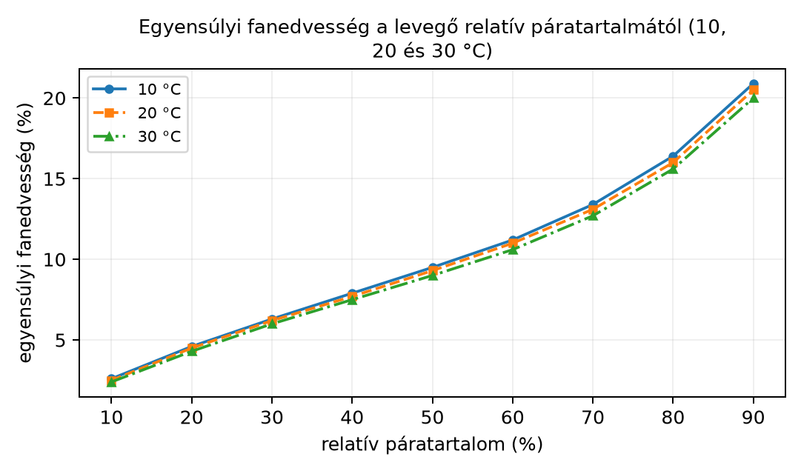

Képzeld el, hogy egy megrendelő tömör tölgyfa étkezőasztalt kér. A táblásított lapot megragasztod, lecsiszolod, lelakkozod, és kiszállítod. Az első fűtési szezonban a lap közepén hajszálrepedés jelenik meg, vagy a keret széthúz. A reklamáció oka sokszor nem a ragasztó, hanem a fa nem megfelelő nedvességtartalma.
A faanyag nedvességtartalma a legfontosabb olyan tulajdonság, amelyet a műhelyben naponta figyelembe kell venned. Befolyásolja a fa tömegét, a szilárdságát, a zsugorodását-dagadását, a ragasztás minőségét, a pácolás és lakkozás sikerességét, valamint a beépítés utáni alakváltozást. Aki a nedvességet nem méri, az gyakran „vakon” dolgozik: a drága faanyag később elvetemedik, megreped, vagy a felületkezelő anyag lepattogzik.
Ebben az alfejezetben megtanulod, mit jelent a fa nedvességtartalma, miben van a víz a fában, milyen nedvességértékek jellemzőek, és hogyan kell a nedvességtartalmat számítani és mérni.
Tégy fel egy frissen vágott fenyődarabot a mérlegre: meglepően nehéz – a tömegének jelentős része víz. Ha a fát apró darabokra vágnád, és abszolút száraz állapotig szárítanád, a tömegéből sok eltűnne.
A fa nedvességtartalmát mindig a szárazanyag-tömeghez viszonyítjuk. Ezért is fontos a pontos mérés: ha egy 500 g nedves próbadarabot kiszárítunk, és a teljesen száraz tömege 400 g lesz, akkor a fából 100 g víz távozott. A nedvességtartalom számítása ezt a vízmennyiséget fogja viszonyítani a 400 g-os száraz tömeghez, nem az eredeti 500 g-hoz.
A víz a fában kétféle módon helyezkedik el.
A különbséget jól megmutatja a szárítási folyamat: amíg a fa a szabad vizet adja le, addig alig zsugorodik. Amikor már csak a kötött víz távozik, a fa zsugorodásnak indul. Ez a határ a rosttelítettségi határ.
Definíció. A rosttelítettségi határ az a fanedvesség-tartomány, amelynél a sejtüregek már nem tartalmaznak szabad vizet, de a sejtfalak még telítve vannak kötött vízzel.
A rosttelítettségi határ jellemző értéke a legtöbb hazai fafaj esetén körülbelül 28–30 % (ellenőrizendő: fafajonként, szakirodalmi táblázat szerint). Ez az érték azért fontos, mert:
A fa nedvességtartalma a levegő hőmérsékletétől és relatív páratartalmától függően idővel beáll egy adott értékre. Ezt egyensúlyi fanedvességnek () nevezzük.
Definíció. Az egyensúlyi fanedvesség az a nedvességtartalom, amelyet a faanyag adott hőmérsékletű és relatív páratartalmú levegőben hosszabb idő alatt elér.
Ha a fa nedvességtartalma magasabb, mint az egyensúlyi fanedvesség, akkor vizet ad le (szárad). Ha alacsonyabb, akkor vizet vesz fel (dagad). A beépítés utáni vetemedés leggyakoribb oka, hogy a fa nedvességtartalma nem volt összhangban a használati hely várható klímájával.
A gyakorlatban használt tájékoztató tartományok (szemléltető értékek, ellenőrizendők a felhasználás és a fűtési/párásítási viszonyok szerint):
| Felhasználási hely / állapot | Jellemző nedvességtartalom / egyensúlyi fanedvesség (tájékoztató, %) | Megjegyzés |
|---|---|---|
| Erdőn, frissen vágott fa (nem egyensúlyi állapot) | 30–120 % | Pillanatnyi nedvességtartalom, nem : fafajtól, évszaktól függő, rosttelítettségi határ feletti állapot |
| Szabadtéri fedett hely, szellős | 16–20 % | Időjárástól függ |
| Fűtött belső tér, lakás bútor | 8–12 % | Központi fűtés, téli időszak |
| Padlófűtés alá szánt fa | 6–8 % | Ellenőrizendő a burkolatgyártó előírása szerint |
| Kültéri, közvetlen időjárásnak kitett fa | 16–20 % vagy magasabb | A fa kültéren is „dolgozik” |
Megjegyzés. Az egyensúlyi fanedvesség nem állandó, hanem a levegő hőmérsékletétől és relatív páratartalmától függ. Télen a fűtött lakás levegője száraz, ezért a fa nedvességtartalma lecsökken; nyáron párásabb levegőn újra megemelkedik. Ezért kell a bútorok szerkezetét és a fa kiválasztását a „fa mozog” elvhez igazítani.
Továbbvitt eredmény. A „fa mozog” elv alapja, hogy a felhasználás helyéhez tartozó célnedvességet be kell tartatni. Ez az összefüggés a Zsugorodás, dagadás és vetemedés: a fa „mozgása” alfejezetben kap szerepet, és a A ragasztás alapfogalmai és a ragasztóanyagok során is kritikus, mert a nedves fa rosszul ragasztható, a ragasztott kötés később megnyílik.
A faiparban a nedvességtartalmat hagyományosan abszolút nedvességtartalomként adjuk meg, a száraz tömegre vonatkoztatva.
Definíció. A fa abszolút nedvességtartalma (%):
ahol:
Az abszolút száraz állapot a gyakorlatban a szárítószekrényben, hőmérsékleten tömegállandóságig szárított fa (MSZ EN 13183-1; ellenőrizendő: a vonatkozó szabvány szerinti hőmérséklet). A tömegmérést addig ismételjük, amíg két egymást követő mérés közötti eltérés elhanyagolhatóan kicsi nem lesz.
Erre a faipari szabványgyakorlat miatt van szükség. A száraz tömeg állandó, míg a nedves tömeg a pillanatnyi nedvességtartalomtól függ. Így a számított érték egyértelműen jellemzi a fa víztartalmát.
Megjegyzés. A nedvességtartalom számítása mindig a száraz tömegre vonatkozik. Ez azt jelenti, hogy egy 100 % feletti nedvességtartalom is lehetséges: például egy nagyon nedves friss fenyő szijácsa a száraz tömegénél több vizet is tartalmazhat ().
Példa. Egy bükk próbadarab nedves tömege . Szárítószekrényes szárítás után az abszolút száraz tömeg . Mennyi a fa nedvességtartalma?
Megoldás.
Adott:
Keresett: (%)
Képlet:
Behelyettesítés:
Egyszerűsítés:
Ellenőrzés. A víz tömege 40 g, a száraz tömeg 280 g. A víz a száraz tömegnek nagyjából egy hetede, ami 100 % / 7 ≈ 14,3 %. Az eredmény reális, bükk esetén légszáraz állapot közelében van.
Példa. Egy tölgyfa parketta-léc abszolút száraz tömege . A mért nedvességtartalma . Mennyi a léc tényleges tömege ebben a nedves állapotban?
Megoldás.
A képletet átrendezzük, hogy -t kapjunk.
Osszunk 100-zal és szorozzunk -lal:
Behelyettesítés:
Ellenőrzés. 10 % nedvességtartalom 45 g vizet jelent. A 450 g száraz tömeg + 45 g víz = 495 g. A számítás konzisztens.
A nedvességtartalmat a műhelyben két fő módszerrel mérjük: tömegméréses (szárítószekrényes) és elektromos nedvességmérővel. A tömegméréses módszer pontos, de lassú, ezért inkább laboratóriumban, kalibráláshoz vagy vitás esetben alkalmazzuk. Az elektromos mérők gyorsak, de korrekcióra lehet szükségük.
Ez a mérés a nedvességtartalom meghatározás alapmódszere. A folyamat:
A mérést jegyzőkönyvben kell rögzíteni.
Figyelem. A próbadarabot a fából úgy vegyük, hogy az a vizsgált anyag egészét jellemezze. Ne a felületről, hanem a keresztmetszetből, a nedvesebb mag környékéről is vegyünk mintát.
Az elektromos nedvességmérők gyors, roncsolásmentes mérési lehetőséget adnak. Két elterjedt típusuk van:
Megjegyzés. Az elektromos nedvességmérő műszerek gyárilag bizonyos fafajra és mérési tartományra vannak kalibrálva. Más fafajnál a műszer által mutatott érték eltérhet a valós nedvességtartalomtól. Ezért a gyártói utasítás szerint fafajra és hőmérsékletre korrekciót kell alkalmazni, vagy a műszert referencia-méréssel kell kalibrálni.
Az ábra szerint a tűs mérővel a bütütől legalább kb. 300 mm-re, a szélesség közepén mérünk, az elektródákat a vastagság kb. harmadáig szúrjuk be; a kapacitív mérő talpa teljes felülettel feküdjön fel, göcsön és repedésen ne mérj. A szárítószekrényes próbatestet a bütütől távol vágjuk ki. A HTML-változatban a helyes mérést a tipikus hibás esetekkel (bütü közelében, göcsön, sekély beszúrással) vetheted össze.
Példa. Egy ellenállásos nedvességmérőt bükkhöz kalibráltak. Tölgyfánál, 18 °C-on mutatott értéket meg kell szorozni 0,85-tel (tájékoztató, ellenőrizendő: a gépkönyv és a műszer gyártói adatai szerint). Ha a műszer 12 %-ot mutat, a korrigált érték:
A hőmérséklet is befolyásolja a mérést: hideg fa gyakran alacsonyabb nedvességet mutat, mint a valós érték. Ezért a mérés előtt a faanyagot érdemes a műhely hőmérsékletéhez közelíteni, és a mérést a faanyag gyártója vagy a műszer kézikönyve szerint elvégezni.
A levegő hőmérséklete és relatív páratartalma meghatározza, hogy a fa hosszabb idő után milyen nedvességtartalmat vesz fel. Ezt egyensúlyi fanedvesség-diagramnak nevezzük. A diagram használata egyszerű:
Például, ha a levegő 20 °C-os és 50 % relatív páratartalmú, akkor a fa egyensúlyi nedvességtartalma körülbelül 9 % (tájékoztató érték, ellenőrizendő a használt diagram szerint).
Az alábbi diagram három hőmérsékletre (, és ) mutatja az egyensúlyi fanedvességet a relatív páratartalom függvényében (10–90 %). A görbék szemléltető, számított értékek (ellenőrizendő: a tényleges egyensúlyi nedvesség a fafajtól és a hiszterézistől is függ).

A diagram szemlélteti, hogy:
A gyakorlatban a fenti táblázatot és az ilyen diagramot együtt használjuk, hogy meghatározzuk a beépítés helyére érvényes célnedvességet.
Megjegyzés. Az egyensúlyi fanedvesség nem lineárisan nő a páratartalommal, és függ a faanyag fafajától, valamint attól is, hogy a fa szárításból vagy nedvesedésből érkezik-e (hiszterézis). A diagram csak becslésre való; pontos értékhez a faanyagvizsgálati szabványok és a gyakorlati tapasztalat szükséges.
A célnedvesség az a nedvességtartalom, amelyet a faanyagnak a beépítés előtt el kell érnie, hogy a használati helyen a legkisebb legyen a zsugorodás vagy dagadás okozta méretváltozás.
A célnedvességet a termék típusa és a beépítés helye alapján választjuk meg:
Fontos. A célnedvességet mindig a beépítés várható klímájához kell igazítani, és a faanyagot a műhelyben addig tárolni, amíg el nem éri ezt az értéket.
Továbbvitt eredmény. A célnedvesség értékét mind a faanyag kiválasztásakor, mind a ragasztás előtt, mind a felületkezeléskor ellenőrizni kell. A Zsugorodás, dagadás és vetemedés: a fa „mozgása” alfejezetben számszerűen is megmutatjuk, mekkora méretváltozást okoz a rosttelítettségi határ alatti nedvességváltozás. A A ragasztás alapfogalmai és a ragasztóanyagok során pedig a ragasztandó felületek nedvességtartalmának hasonlósága miatt lesz fontos a mérés.
A nedvességmérés eredményét érdemes írásban rögzíteni. Egy ilyen mérési jegyzőkönyv segít a későbbi vitás esetek, reklamációk vagy gyártásközi ellenőrzések során.
Példa jegyzőkönyv szerkezete:
| Mező | Tartalom |
|---|---|
| Vizsgálat dátuma | 2025. 01. 15. |
| Vizsgáló neve | Kovács Péter (tanuló) |
| Faanyag megnevezése | Tölgy, gőzölt, érintőirányú minta |
| Faanyag tömege, nedves | 245,6 g |
| Szárítószekrény hőmérséklete | 103 °C |
| Száraz tömeg | 218,4 g |
| Mért nedvességtartalom | 12,5 % |
| Műszer (ha elektromos) | Ellenállásos nedvességmérő, típus: XY – kalibrálva tölgyre, 20 °C |
| Mérési hely / környezet | Műhely, 21 °C, 55 % relatív páratartalom |
| Megjegyzés | A mért érték a beépítési célnedvesség tartományán belül van. |
A jegyzőkönyvben fontos, hogy a számítást is rögzítsük:
A mérési jegyzőkönyv tehát nem csak a mért adatokat, hanem a képletet, a behelyettesítést és az eredményt is tartalmazza.
Cél: annak megállapítása, hogy a faanyag nedvességtartalma a felhasználás (pl. bútorgyártás, ragasztás) szempontjából megfelelő-e.
Anyagok, eszközök:
Gépbiztonság. Ez a művelet nem forgó gépet használ, de a mérés során tartsd be a műhely rendjét. Az elektromos nedvességmérőt csak a gyártói kézikönyv szerint, ép kábellel és elektródákkal használd. Ne mérd nedves kézzel, és ne használd olyan helyen, ahol víz áll a padlón.
Lépések:
Tipikus hiba. A kapacitív mérőnél a felületi nedvesség (pl. páralecsapódás, frissen gyalult, fűtött anyag) tévesen magas értéket mutathat. A mérés előtt a fát kondicionálni kell a műhely hőmérsékletére, és a mérési pontokat szárazra kell törölni.
A nedvességmérés során az alábbi szempontokat ellenőrizzük:
Ha a mért nedvességtartalom túl magas, a fát tovább kell szárítani, vagy át kell kondicionálni a műhelyben. Túl alacsony nedvességtartalomnál a fa nedvesedni fog, ami dagadáshoz és feszültséghez vezethet.
Egy asztalos konyhabútorhoz vásárolt tölgyfa ajtókhoz fűrészárut. A szállító szerint a faanyag 10 %-os nedvességtartalmú. Az asztalos a műhelyben ellenőrizte a deszkákat egy kapacitív nedvességmérővel. A műszer 13 %-ot mutatott. Az asztalos fafajra vonatkozó korrekciót használt, és a korrigált érték 11,5 % lett. Mivel a konyhabútor fűtött belső térbe készül, ez az érték még a tűréshatáron belül van, de a faanyagot betárolta a műhelybe, és három hétig a beépítési klímához kondicionálta.
A türelem kifizetődött: a bútor ajtajai a fűtési szezonban sem húztak el, és a felületkezelő anyag sem repedezett. A hiba az lett volna, ha a szállítói értéket vakon elfogadja, vagy ha a fűtött lakásban készülő bútorhoz túl nedves fát használ.
Válaszold meg röviden, indoklással.
Mondd ki a szabad víz és a kötött víz fogalmát! Hol helyezkednek el, és mi a hatásuk a fa méretére?
Számítsd ki a nedvességtartalmat! , .
Egy fenyőfa deszka tömege 12,5 kg, nedvességtartalma 28 %. Mennyi a deszka abszolút száraz tömege?
Egy bútorlap-alkatrész nedvességtartalmát elektromos mérővel mérjük. A műszer 9,0 %-ot mutat, de a kézikönyv szerint a fafaj korrekciós szorzója 1,15. Mennyi a korrigált nedvességtartalom?
Egy asztalos tömör fa asztallapot készít. A műhely levegője 22 °C és 40 % relatív páratartalmú. A faanyag raktárban mért nedvességtartalma 14 %. Kell-e kondicionálnia a fát, és miért? Használj becslést a diagram vagy a táblázat alapján (tájékoztató értékekkel)!
Készíts mérési jegyzőkönyvet! Egy tölgyfa mintát szárítószekrényben megszárítottunk. A nedves tömeg 236,8 g, a tömegállandó száraz tömeg 211,4 g. Számítsd ki a nedvességtartalmat, töltsd ki a jegyzőkönyv táblázatát, és írd le, milyen célnedvességre lenne szükség, ha a faanyagot fűtött szobába szánjuk.
Adott: , .
Képlet:
Behelyettesítés:
Ellenőrzés. 9,77 kg száraz tömegű fa 28 % nedvességgel: , rendben.
A műhely levegője 22 °C és 40 % relatív páratartalmú. A diagram vagy táblázat szerint ilyen környezetben a fa egyensúlyi fanedvessége nagyjából 7–8 % (tájékoztató). A faanyag jelenlegi nedvességtartalma 14 %, ami ennél jóval magasabb. A fa a műhelyben lassan száradna, és közben zsugorodna. Ragasztás és méretre munkálás előtt a fát mindenképpen kondicionálni kell, hogy a fűtött szobában ne zsugorodjon tovább. A válasz: igen, a fát a műhely vagy a beépítési hely klímájához kell kondicionálni.
Számítás:
A mért nedvességtartalom 12,0 %.
A jegyzőkönyv kitöltve:
A 12,0 % a céltartomány felső határán van. A faanyag beépítés előtt további óvatos kondicionálást igényelhet, ha a lakás nagyon fűtött és télen száraz a levegő.
A fa nedvességtartalma a legfontosabb olyan anyagjellemző, amely a műhelyben minden munkafázisban befolyásolja a minőséget. A víz a fában szabad vízként a sejtek üregében, kötött vízként a sejtfalban helyezkedik el. A rosttelítettségi határ (kb. 28–30 %, fafajonként változó, ellenőrizendő) az a nedvességtartalom, amely alatt a kötött víz eltávozása zsugorodást, felvétele dagadást okoz. Az egyensúlyi fanedvesség a levegő hőmérsékletétől és relatív páratartalmától függ; fűtött belső térben jellemzően 8–12 %, kültéren magasabb. A célnedvesség a beépítés helyéhez igazodik. A nedvességtartalmat az abszolút száraz tömegre vonatkoztatva számítjuk: , ahol a nedves, a szárítószekrényben tömegállandóságig szárított minta tömege. A mérés történhet szárítószekrényes (tömegméréses) módszerrel vagy elektromos nedvességmérővel (ellenállásos, kapacitív); az utóbbinál fafaj- és hőmérséklet-korrekció szükséges. A mérési jegyzőkönyv rögzíti a mintát, a hőmérsékletet, a tömegeket és a számított értéket. A nedvességtartalom hatása a zsugorodásnál és a ragasztásnál a fa „mozgásának” alapja, ezért a mérést minden gyártás előtt el kell végezni.
Továbbvitt eredmény. A nedvességtartalmi alapfogalmak (szabad/kötött víz, rosttelítettségi határ, egyensúlyi és célnedvesség) a zsugorodási számítások, a szárítási műveletek, a ragasztási technológiák és a felületkezelési hibák megértésének alapjai. A képlet és a mérési gyakorlat a Zsugorodás, dagadás és vetemedés: a fa „mozgása”, a A faanyag szárítása, gőzölése és egyéb kezelése, valamint a A ragasztás alapfogalmai és a ragasztóanyagok alfejezetekben tér vissza.